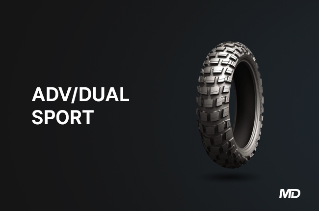

CORSA PLATINUM / ADVENTURE TIRE
Corsa Plalitinum / Adventure bikes and/or scrambler motorcycles are typically motorcycles that are meant for long-distance travel on both pavement and off-road. This means that the construction of ADV/Dual sport tires should be smooth enough for highway use yet with just the right amount of tread pattern for the loose surfaces of off-road usage. More-often-than-not, dual-sport tires would have a listed indication of percentages with regards to its intended use such as 70% offroad / 30% on-road. Knobby tires are more biased towards dirt usage while less aggressive tires would be better geared for more road usage with some light off-roading. For instance, Continental’s Trail Attack 2 tires are designed for 85% on-road and 15% offroad usage. These are the typical knobbier tires that you would find in adventure bikes that are meant for a little more off-road usage like the KTM 790 Adventure R. Meanwhile, Dunlop D606 tires have an intended usage of 90% offroad and 10% on-road usage. Typically, these would be the tires that adventure riders who like spending more time off-road, as its knobby construction would provide superior traction in loose dirt, sand, or mud surfaces.
«BACK NEXT»